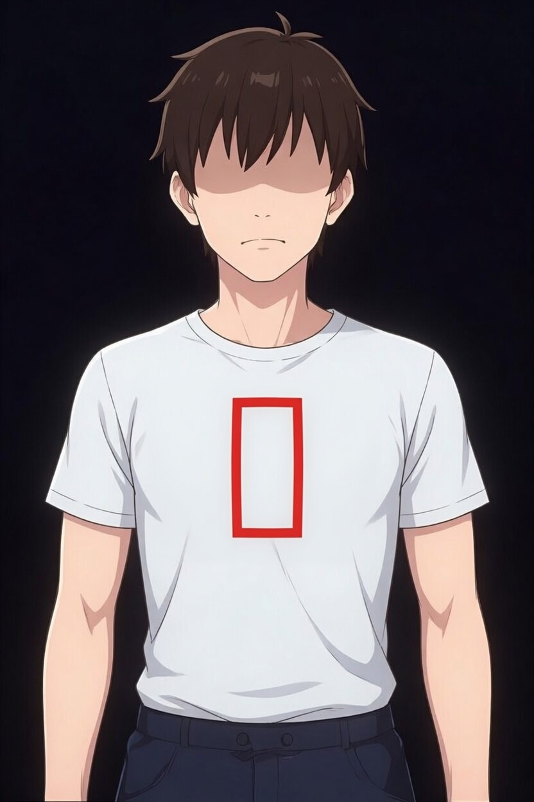

STEP 1
安全確認
周囲に危険（車・火・感電など）がないか確認してから近づいてください。
STEP 2
反応を確認する
肩を軽く叩きながら、大きな声で「大丈夫ですか！」と呼びかけてください。反応がなければ次へ進んでください。
STEP 3
大声で助けを呼ぶ
「誰か来てください！ 119番を呼んでください！ AEDを持ってきてください！」と大声で叫んでください。
STEP 5
呼吸を確認する（10秒以内）
胸の動きを見て、呼吸をしているか確認します。普通の呼吸がなければ、すぐに胸骨圧迫を開始してください。
STEP 6
胸骨圧迫（心臓マッサージ）
両手を重ね、胸の中央（乳首を結ぶ線の中点）に置き、真上から体重をかけて押してください。

押す！
✅ 赤枠の場所を両手で押す
（胸骨の下半分・みぞおちより上）
⚠️ みぞおち（赤枠の下）は押さない
0
回目
⬇️ 5〜6cm 押し込む 💪 肘を伸ばして押す
⚡ 30回！そのまま続けてください！
STEP 7
AED到着時
AEDの電源を入れたら音声ガイダンスに従ってください。電気ショック中は傷病者から離れてください。ショック後はすぐに胸骨圧迫を再開してください。